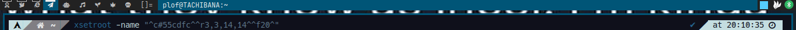
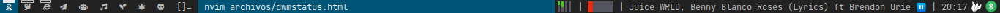

Dwm no tiene mucha configuracion por defecto por lo mismo de ser muy minimo, por lo que para poder hacerlo como AwesomeWM hay que hacer muchas maromas para poder tenerlo funcional.
Por defecto y sin ningun cambio Dwm tiene en la esquina superior derecha un texto en el cual se lee dwm-xx donde xx es la version de dwm, para poder cambiar este texto con el comando xsetroot -name "XXX" donde XXX es el texto que va a salir en esta esquina, y con esto podemos hacer que salida de un comando sea el texto de que aparecera en esa parte por ejemplo xsetroot -name "$(date)" pondra en esa esquina la salida de el comando date que es la fecha, con esto en cuenta el programa dwmblocks nos da una implementacion de poder colocar la salida de cualquier comando en esta parte de la pantalla, si compilamos el programa con sudo make clean install y lo ejecutamos como dwmblocks podremos ver que en la esquina tendremos la fecha y cuanta memoria esta disponible y cuant a ha sido utilizada y que estos valores cambian cada cierto tiempo, estos son los ejemplos que vienen en el archivo blocks.def.h,
Podemos ver que lo unico que hay en esta lista son dos comandos de shell que son ejecutados, los comentarios son muy explicativos en esto, hay un icno, este es opcional y este saldra enfrente de la salida de su respectivo comando, luego sigue el comando que se va a ejecutar y finalmente esta el intervalo que es cada cuanto este comando se volvera a ejecutar y el valo que presenta se reiniciara.
Por defecto y sin ningun cambio Dwm tiene en la esquina superior derecha un texto en el cual se lee dwm-xx donde xx es la version de dwm, para poder cambiar este texto con el comando xsetroot -name "XXX" donde XXX es el texto que va a salir en esta esquina, y con esto podemos hacer que salida de un comando sea el texto de que aparecera en esa parte por ejemplo xsetroot -name "$(date)" pondra en esa esquina la salida de el comando date que es la fecha, con esto en cuenta el programa dwmblocks nos da una implementacion de poder colocar la salida de cualquier comando en esta parte de la pantalla, si compilamos el programa con sudo make clean install y lo ejecutamos como dwmblocks podremos ver que en la esquina tendremos la fecha y cuanta memoria esta disponible y cuant a ha sido utilizada y que estos valores cambian cada cierto tiempo, estos son los ejemplos que vienen en el archivo blocks.def.h,
static const Block blocks[] = {
/*Icon*/ /*Command*/ /*Update Interval*/ /*Update Signal*/
{"Mem:", "free -h | awk '/^Mem/ { print $3\"/\"$2 }' | sed s/i//g", 30, 0},
{"", "date '+%b %d (%a) %I:%M%p'", 5, 0},
};
Podemos ver que lo unico que hay en esta lista son dos comandos de shell que son ejecutados, los comentarios son muy explicativos en esto, hay un icno, este es opcional y este saldra enfrente de la salida de su respectivo comando, luego sigue el comando que se va a ejecutar y finalmente esta el intervalo que es cada cuanto este comando se volvera a ejecutar y el valo que presenta se reiniciara.

Pero esto solo nos podra mostrar letras, si queremos hacerlo algo más lindo como la imagen de arriba en donde podremos ver diferentes figuras necesitariamos dwm tenga el patch de status2d, este patch nos permite que con una cierta secuencia de caracteres podremos generar rectangulos, lineas y efectos sobre las letras de cualquier color hexadecimal, ya con este patch instalado podremos hacer estos efectos:
^c#XXXXXX^
Con el texto de arriba dwm aplicara el color hexadecimal XXXXXX a todo lo que este despues de ese texto ya sea un grafico o letras
^r3,3,14,14^
El texto de arriba generara un cuadrado de 14x14 pixeles comenzando desde la coordenada 3,3
^f20^
Este texto creara un espacio de 20 pixeles entre el ultimo grafico dibujado y en donde empezara a dibujar, de no colocar esto las letras o los siguientes graficos que se quieran dibujar.
^b#XXXXXX^
Y el siguiente codigo pondra el fondo de el color XXXXXX.
por lo que el siguiente codigo
xsetroot -name "^c#55cdfc^^r3,3,14,14^^f20^"
Mostrara lo siguiente en la pantalla:

Con esto podemos hacer graficas tomando valores del 1-100 y mapearlos del 0-32 que es el maximo que tengo configurado como el tamaño, podremos mostrar el uso de cada core de el cpu y el uso total de la memoria ram, ademas de la fecha y yo agregue que cancion esta repsorciendo mpd, finalmente me quedo asi:

Para recapitular, usando unos patches de dwm, un programa llamado dwmblocks y unos scrpits en python se puede lograr este efecto, tambien se pude mostrar la bateria y hacer cada uno de estos unos botones que reacciones a los clicks, pero esto ultimo me causa crasheos en dwm y actualmente no lo he podido implementar, todo lo necesario para reproducir esto se encuentra aqui